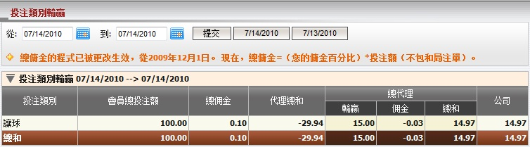

投注類別輸贏
定義:
這份報告顯示在一段時間內會員總投注額, 總佣金, 總代理輸贏, 及根據公司在每場投注的輸贏中總代理必須支付予或從上線處接收到的數額。

圖 1.1
用詞註解:
- 會員投注額: 會員根據投注類別的總投注額。
- 總佣金: 根據投注類別, 總代理從上線出可能得到的最高佣金數額。
- 代理總和: 根據投注類別, 總代理收到或支付予代理的數額。
- 總代理輸贏: 根據投注類別, 總代理基於佔成數的輸贏數額。
- 總代理佣金: 扣除代理佣金後, 總代理從上線出收到的佣金數額。
- 總代理總和: 總代理包括佣金的總輸贏輸額。
- 公司: 總代理需支付予或從上線處接收到的總數額。
如何理解報告:
從上圖中, 我們可以告訴大家會員投注100於讓球盤的投注類別, 總代理共贏得15, 可得到 29.94 支付上線: 29.94 - 14.97= 14.97.